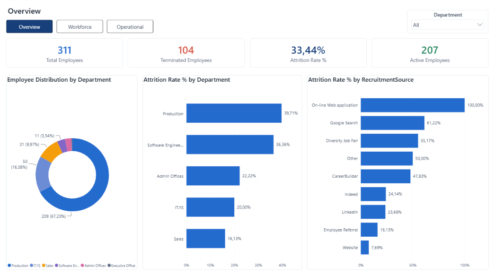
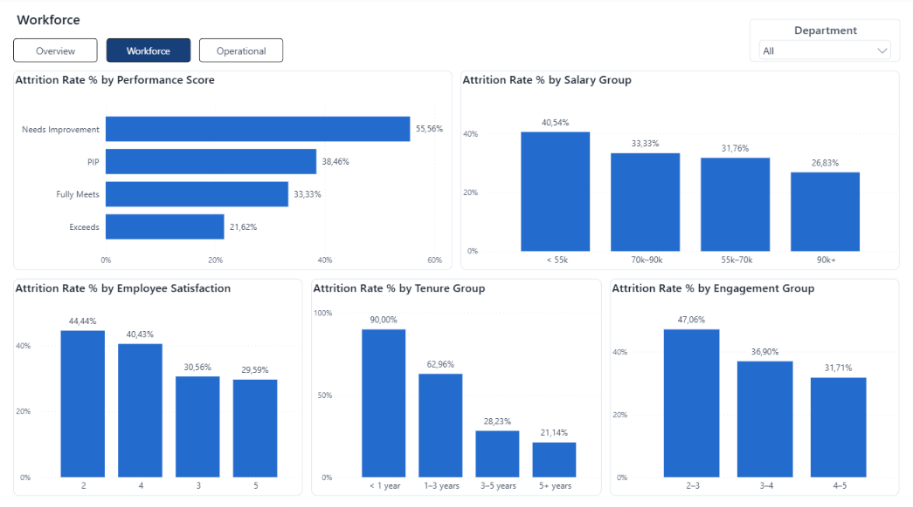
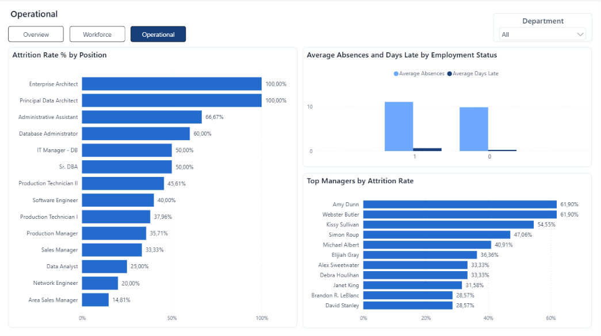

HR Attrition Analysis
A focused retention analysis designed to move from “what is happening?” to “where should the organization investigate further?” without mistaking correlation for explanation.

Where is attrition concentrated — and which patterns warrant deeper investigation?
The project analyzes department, role, tenure, performance, satisfaction, salary, recruitment source, engagement, manager and attendance patterns. SQL was used to test the business questions, and Power BI was used to build the three-page report.
Three pages, three levels of the question
- Overview: What is happening?
- Workforce: Which workforce patterns stand out?
- Operational: Where should the organization investigate further?
The Power BI report is organized across three pages with Department filtering and views covering overall attrition, workforce patterns and operational segments.
Attrition is concentrated early and unevenly
- Employees with 1–3 years of service have a 62.96% attrition rate (34 of 54 employees). Together with the very small <1-year group, this makes early tenure the clearest retention pattern in the project.
- The <1 year group is higher at 90.0% (9 of 10), but the group is very small and should be treated as a directional signal rather than a standalone conclusion.
- Production has 39.71% attrition across 209 employees, making it the largest workforce segment with elevated observed attrition.
- Lower-paid groups generally show higher observed attrition than higher-paid groups, but compensation alone does not explain the pattern.
- Employees who left averaged more absences (11.05 vs 9.83) and more late arrivals in the last 30 days (0.66 vs 0.29) than active employees. Attendance is therefore treated as a diagnostic signal, not a causal explanation.
A recruitment-source result that changes after segmentation
Attrition varies widely across recruitment sources: from 7.7% for Website hires to 61.2% for Google Search hires. At first glance that can look like a channel-quality problem.
Further analysis shows that 87.8% of employees hired through Google Search are Production Technicians. The source-level rate is therefore partly a workforce-composition effect rather than a clean measure of channel quality.
This is the core lesson of the project: HR context and segmentation matter before a descriptive rate becomes a business conclusion.
Where the organization should investigate
- Review the first three years of the employee experience across recruitment, onboarding, probation, development and manager integration.
- Evaluate recruitment sources using quality-of-hire and retention outcomes, not hiring volume alone.
- Prioritize workforce segments with elevated observed attrition, especially Production and job roles with persistently high observed rates.
- Compare composition within departments and job families before attributing a difference to one factor.
- Track attendance, engagement and satisfaction as diagnostic signals for deeper review.
Three-page Power BI report


Technical details
Tools: MySQL · DBeaver · SQL · Power BI · DAX · Power Query.